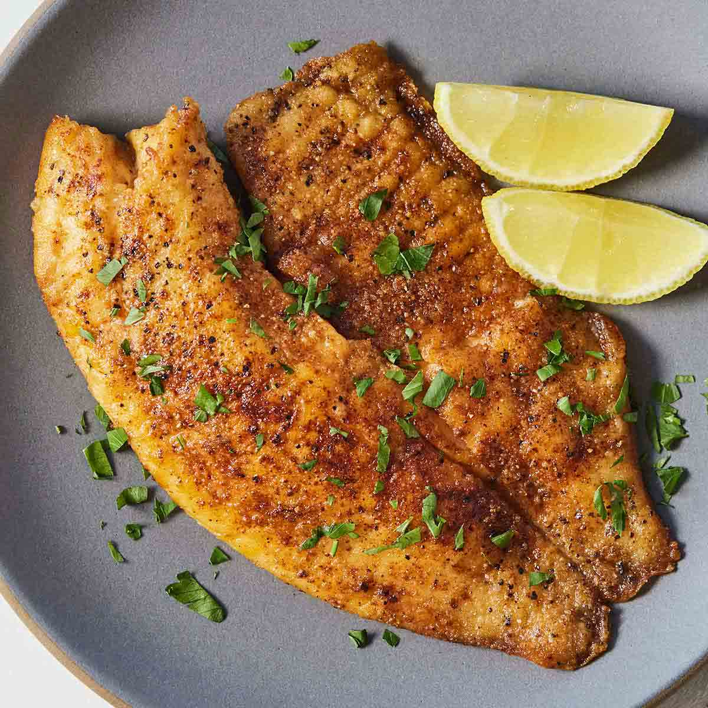

Pan Seared Tilapia Recipe

The crunch of this pan seared tilapia will have you wanting more!
If you're looking for something quick and easy to make for the night, look no further.
This fish comes with a slight kick and a nice crunch. Best served on a bed of rice and garnished with parsley and lemon.
1 filet = 1 serving. Recipe is per filet
Ingredients
- Tilapia Filet
- Salt and Pepper, to taste
- Paprika, to taste
- Garlic Powder, to taste
- Olive oil
- 1 tbsp of Butter
- Flour for dredge
Steps
- Season both sides of your filet with the salt, pepper, paprika, and garlic powder. Don't be afraid to go heavy.
- Begin heating a pan at medium heat. In a bowl, add your flour. Dredge your filets lightly in this flour on both sides before cooking.
- Add olive oil and butter to your pan, allow the butter to melt and the oil to heat up.
- Dredge your filet, shake off any excess flour and add it to your pan
- Cook tilapia 2-3 minutes on each side, until golden brown
- Place on a drying rack once cooked. Plate your tilapia and optionally garnish with parsley and lemon